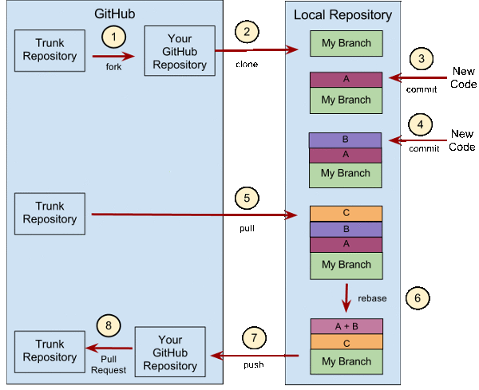

git
Table of Contents
- References
- Resources
- Tutorials
- Frequently Used Commands
- 常用 Git 命令清单 by 阮一峰
- Show total code lines commited between two commites
- Show remote branches
- Rename local branch
- Add home dir to git git home
- Cancel a wrong staging
- Remove unwanted directory from the staging area
- List all files in the git repository
- Get list of modified
- Create branches
- Show branch history
- Switch to another brranch with modified files
- git diff
- GitHub Token
- My Workflow
- Advanced Topics
- 取消 commit
- change git commit message after push (–amend)
- How to Write a Git Commit Message
- change commit message
- remove sensitive data from git history
- rename branch both locally and remotely
- rename local branch
- Pretty branch graph
- How can I preview a merge in git?
- Display git branch and status in command prompt
- Tilde (~) and caret (^)
- Git Rebase
References
10 个迅速提升你 Git 水平的提示
(http://www.oschina.net/translate/10-tips-git-next-level)
- Git自动补全
- 在 Git 中忽略文件
- 是谁弄乱了我的代码？
- 查看仓库历史记录
- 绝对不要丢失对Commit的跟踪
- 暂存文件的部分改动: 例如你对一个文件进行了多次修改并且想把他们分别提交。这种情况下，你可以在 add 命令中加上 -p 参数
- 压缩多个Commit
- Stash未提交的更改
- 检查丢失的提交
Git Reference
This is the Git reference site. It is meant to be a quick reference for learning and remembering the most important and commonly used Git commands. The commands are organized into sections of the type of operation you may be trying to do, and will present the common options and commands needed to accomplish these common tasks.
Each section will link to the next section, so it can be used as a tutorial. Every page will also link to more in-depth Git documentation such as the official manual pages and relevant sections in the Pro Git book, so you can learn more about any of the commands. First, we'll start with thinking about source code management like Git does.
Git Immersion
GIT IMMERSION IS A GUIDED TOUR THAT WALKS THROUGH THE FUNDAMENTALS OF GIT, INSPIRED BY THE PREMISE THAT TO KNOW A THING IS TO DO IT.
Try Git
An interactive course online.
Pro Git Book
See Pro Git Book
读懂diff
Refer to http://www.ruanyifeng.com/blog/2012/08/how_to_read_diff.html.
显示结果如下：
diff --git a/f1 b/f1 index 6f8a38c..449b072 100644 --- a/f1 +++ b/f1 @@ -1,7 +1,7 @@ a a a -a +b a a a
- 第一行表示结果为git格式的diff。
- 第二行表示两个版本的git哈希值（index区域的6f8a38c对象，与工作目录区域的449b072对象进行比较），最后的六位数字是对象的模式（普通文件，644权限）。
- 第三行表示进行比较的两个文件。"—"表示变动前的版本，"
+"表示变动后的版本。 - 后面的行都与官方的合并格式diff相同。
Git 使用规范流程 by 阮一峰 important step_by_step guide
团队开发中，遵循一个合理、清晰的Git使用流程，是非常重要的。 否则，每个人都提交一堆杂乱无章的commit，项目很快就会变得难以协调和维护。 下面是ThoughtBot 的Git使用规范流程。我从中学到了很多，推荐你也这样使用Git。

1. 新建分支
首先，每次开发新功能，都应该新建一个单独的分支（这方面可以参考《Git分支管理策略》）。
# 获取主干最新代码 $ git checkout master $ git pull # 新建一个开发分支myfeature $ git checkout -b myfeature
2. 提交分支commit
分支修改后，就可以提交commit了。
$ git add --all $ git status $ git commit --verbose
git add命令的all参数，表示保存所有变化（包括新建、修改和删除）。从Git 2.0开始，all是git add的默认参数，所以也可以用git add .代替。git commit命令的verbose参数，会列出diff的结果。
3. 撰写提交信息
提交commit时，必须给出完整扼要的提交信息，下面是一个范本。
Present-tense summary under 50 characters * More information about commit (under 72 characters). * More information about commit (under 72 characters). http://project.management-system.com/ticket/123
- 第一行是不超过50个字的提要，
- 然后空一行，
- 罗列出改动原因、主要变动、以及需要注意的问题。
- 最后，提供对应的网址（比如Bug ticket）。
4. 与主干同步
分支的开发过程中，要经常与主干保持同步。
$ git fetch origin $ git rebase origin/master
5. 合并commit
分支开发完成后，很可能有一堆commit，但是合并到主干的时候，往往希望只有一个（或最多两三个）commit，这样不仅清晰，也容易管理。
那么，怎样才能将多个commit合并呢？这就要用到 git rebase 命令。
$ git rebase -i origin/master
git rebase 命令的 i 参数表示互动（interactive），这时git会打开一个互动界面，进行下一步操作。
下面采用Tute Costa的例子，来解释怎么合并commit。
pick 07c5abd Introduce OpenPGP and teach basic usage pick de9b1eb Fix PostChecker::Post#urls pick 3e7ee36 Hey kids, stop all the highlighting pick fa20af3 git interactive rebase, squash, amend # Rebase 8db7e8b..fa20af3 onto 8db7e8b # # Commands: # p, pick = use commit # r, reword = use commit, but edit the commit message # e, edit = use commit, but stop for amending # s, squash = use commit, but meld into previous commit # f, fixup = like "squash", but discard this commit's log message # x, exec = run command (the rest of the line) using shell # # These lines can be re-ordered; they are executed from top to bottom. # # If you remove a line here THAT COMMIT WILL BE LOST. # # However, if you remove everything, the rebase will be aborted. # # Note that empty commits are commented out
上面的互动界面，先列出当前分支最新的4个commit（越下面越新）。每个commit前面有一个操作命令，默认是 pick ，表示该行commit被选中，要进行 rebase 操作。
4个commit的下面是一大堆注释，列出可以使用的命令。
- pick：正常选中
- reword：选中，并且修改提交信息；
- edit：选中，rebase时会暂停，允许你修改这个commit（参考这里）
- squash：选中，会将当前commit与上一个commit合并
- fixup：与squash相同，但不会保存当前commit的提交信息
- exec：执行其他shell命令
上面这6个命令当中，squash和fixup可以用来合并commit。先把需要合并的commit前面的动词，改成squash（或者s）。
pick 07c5abd Introduce OpenPGP and teach basic usage s de9b1eb Fix PostChecker::Post#urls s 3e7ee36 Hey kids, stop all the highlighting pick fa20af3 git interactive rebase, squash, amend
这样一改，执行后，当前分支只会剩下两个commit。第二行和第三行的commit，都会合并到第一行的commit。提交信息会同时包含，这三个commit的提交信息。
# This is a combination of 3 commits. # The first commit's message is: Introduce OpenPGP and teach basic usage # This is the 2nd commit message: Fix PostChecker::Post#urls # This is the 3rd commit message: Hey kids, stop all the highlighting
如果将第三行的squash命令改成fixup命令。
pick 07c5abd Introduce OpenPGP and teach basic usage s de9b1eb Fix PostChecker::Post#urls f 3e7ee36 Hey kids, stop all the highlighting pick fa20af3 git interactive rebase, squash, amend
运行结果相同，还是会生成两个commit，第二行和第三行的commit，都合并到第一行的commit。但是，新的提交信息里面，第三行commit的提交信息，会被注释掉。
# This is a combination of 3 commits. # The first commit's message is: Introduce OpenPGP and teach basic usage # This is the 2nd commit message: Fix PostChecker::Post#urls # This is the 3rd commit message: # Hey kids, stop all the highlighting
Pony Foo 提出另外一种合并commit的简便方法，就是先撤销过去5个commit，然后再建一个新的:
$ git reset HEAD~5
$ git add .
$ git commit -am "Here's the bug fix that closes #28"
$ git push --force
squash 和 fixup 命令，还可以当作命令行参数使用，自动合并commit。
$ git commit --fixup $ git rebase -i --autosquash
这个用法请参考这篇文章 ，这里就不解释了。
6. 推送到远程仓库
合并commit后，就可以推送当前分支到远程仓库了。
$ git push --force origin myfeature
git push 命令要加上 force 参数，因为rebase以后，分支历史改变了，跟远程分支不一定兼容，有可能要强行推送（参见这里）。
7. 发出Pull Request
提交到远程仓库以后，就可以发出 Pull Request 到 master 分支，然后请求别人进行代码review，确认可以合并到 master。
常用 Git 命令清单
(http://www.ruanyifeng.com/blog/2015/12/git-cheat-sheet.html?bsh_bid=938838579)
git –orphan gh-pages 也很重要，用于创建一个全新的分支，不包含原分支的提交历史，Gihthub项目主页分支用这个。
没有git bisec就算了，连git rebase也没有？git rebase算是比较常用的了。 看log建议用gitk，不用记那么多参数。 git alias 也比较有用。 但是常用的就那么几个，不常用的还是要现查手册。
Resources
GitGuys
(link) GitGuys presents over 30 tutorials on the use of Git to help you, step-by-step, in setting up git from scratch through dealing with the distributed environment. Each tutorial covers a specific topic so that later, after you have Git up and running, if you need to reference a specific topic you can quickly and easily.
Tutorials
TODO Think Like (a) Git: nice tutorial git tutorial
- State "TODO" from
(link)
猴子都能动的 Git 入门
git 简易指南
(link)
Frequently Used Commands
常用 Git 命令清单 by 阮一峰
(http://www.ruanyifeng.com/blog/2015/12/git-cheat-sheet.html)

几个专用名词的译名如下:
- Workspace：工作区
- Index / Stage：暂存区
- Repository：仓库区（或本地仓库）
- Remote：远程仓库
一、新建代码库
# 在当前目录新建一个Git代码库 $ git init # 新建一个目录，将其初始化为Git代码库 $ git init [project-name] # 下载一个项目和它的整个代码历史 $ git clone [url]
二、配置
Git的设置文件为.gitconfig，它可以在用户主目录下（全局配置），也可以在项目目录下（项目配置）。
# 显示当前的Git配置 $ git config --list # 编辑Git配置文件 $ git config -e [--global] # 设置提交代码时的用户信息 $ git config [--global] user.name "[name]" $ git config [--global] user.email "[email address]"
三、增加/删除文件
# 添加指定文件到暂存区 $ git add [file1] [file2] ... # 添加指定目录到暂存区，包括子目录 $ git add [dir] # 添加当前目录的所有文件到暂存区 $ git add . # 添加每个变化前，都会要求确认 # 对于同一个文件的多处变化，可以实现分次提交 $ git add -p # 删除工作区文件，并且将这次删除放入暂存区 $ git rm [file1] [file2] ... # 停止追踪指定文件，但该文件会保留在工作区 $ git rm --cached [file] # 改名文件，并且将这个改名放入暂存区 $ git mv [file-original] [file-renamed]
四、代码提交
# 提交暂存区到仓库区 $ git commit -m [message] # 提交暂存区的指定文件到仓库区 $ git commit [file1] [file2] ... -m [message] # 提交工作区自上次commit之后的变化，直接到仓库区 $ git commit -a # 提交时显示所有diff信息 $ git commit -v # 使用一次新的commit，替代上一次提交 # 如果代码没有任何新变化，则用来改写上一次commit的提交信息 $ git commit --amend -m [message] # 重做上一次commit，并包括指定文件的新变化 $ git commit --amend [file1] [file2] ...
五、分支
# 列出所有本地分支 $ git branch # 列出所有远程分支 $ git branch -r # 列出所有本地分支和远程分支 $ git branch -a # 新建一个分支，但依然停留在当前分支 $ git branch [branch-name] # 新建一个分支，并切换到该分支 $ git checkout -b [branch] # 新建一个分支，指向指定commit $ git branch [branch] [commit] # 新建一个分支，与指定的远程分支建立追踪关系 $ git branch --track [branch] [remote-branch] # 切换到指定分支，并更新工作区 $ git checkout [branch-name] # 切换到上一个分支 $ git checkout - # 建立追踪关系，在现有分支与指定的远程分支之间 $ git branch --set-upstream [branch] [remote-branch] # 合并指定分支到当前分支 $ git merge [branch] # 选择一个commit，合并进当前分支 $ git cherry-pick [commit] # 删除分支 $ git branch -d [branch-name] # 删除远程分支 $ git push origin --delete [branch-name] $ git branch -dr [remote/branch]
六、标签
# 列出所有tag $ git tag # 新建一个tag在当前commit $ git tag [tag] # 新建一个tag在指定commit $ git tag [tag] [commit] # 删除本地tag $ git tag -d [tag] # 删除远程tag $ git push origin :refs/tags/[tagName] # 查看tag信息 $ git show [tag] # 提交指定tag $ git push [remote] [tag] # 提交所有tag $ git push [remote] --tags # 新建一个分支，指向某个tag $ git checkout -b [branch] [tag]
七、查看信息
# 显示有变更的文件 $ git status # 显示当前分支的版本历史 $ git log # 显示commit历史，以及每次commit发生变更的文件 $ git log --stat # 搜索提交历史，根据关键词 $ git log -S [keyword] # 显示某个commit之后的所有变动，每个commit占据一行 $ git log [tag] HEAD --pretty=format:%s # 显示某个commit之后的所有变动，其"提交说明"必须符合搜索条件 $ git log [tag] HEAD --grep feature # 显示某个文件的版本历史，包括文件改名 $ git log --follow [file] $ git whatchanged [file] # 显示指定文件相关的每一次diff $ git log -p [file] # 显示过去5次提交 $ git log -5 --pretty --oneline # 显示所有提交过的用户，按提交次数排序 $ git shortlog -sn # 显示指定文件是什么人在什么时间修改过 $ git blame [file] # 显示暂存区和工作区的差异 $ git diff # 显示暂存区和上一个commit的差异 $ git diff --cached [file] # 显示工作区与当前分支最新commit之间的差异 $ git diff HEAD # 显示两次提交之间的差异 $ git diff [first-branch]...[second-branch] # 显示今天你写了多少行代码 $ git diff --shortstat "@{0 day ago}" # 显示某次提交的元数据和内容变化 $ git show [commit] # 显示某次提交发生变化的文件 $ git show --name-only [commit] # 显示某次提交时，某个文件的内容 $ git show [commit]:[filename] # 显示当前分支的最近几次提交 $ git reflog
Show total code lines commited between two commites
git diff 769bf97 HEAD --shortstat
Show remote branches
refer to Git查看、删除、重命名远程分支和tag.
show all branches
git branch -a
remove remote branch or tag
git push origin --delete <branchName> git push origin --delete tag <tagname>
Rename local branch
git branch -m <old> <new>
Add home dir to git git home
1. initialization
git init
2. create .gitignore
* !README.org !.emacs !.bashrc !.gitignore
3. create README.org
Only for backup of my configurations: | name | description | annotation | |------------+----------------------+------------| | [[file:README.org][README.org]] | this file itself | | | [[file:.emacs][.emacs]] | emacs conf file | | | [[file:.bashrc][.bashrc]] | shell conf file | | | [[file:.gitignore][.gitignore]] | git ignore file list | |
4. stage all files:
git add .
5. commit to git repository:
git commit
6. push it up to bitbucket:
git remote add origin https://fengyz@bitbucket.org/fengyz/linuxhome.git git push -u origin --all # pushes up the repo and its refs for the first time git push -u origin --tags # pushes up any tags
Cancel a wrong staging
0. Situation
$ git status On branch master Your branch is up-to-date with 'origin/master'. Changes to be committed: (use "git reset HEAD <file>..." to unstage) new file: .emacs.d/.gitignore new file: .emacs.d/README.org modified: .gitignore
What I want to do is:
- remove the first two files
- revert the last file to old status
1. remove the first two files
git rm –cached .emacs.d/.gitignore git rm –cached .emacs.d/README.org
2. revert the last file-path
to old status
git checkout HEAD .gitignore
3. Result
$ git status
On branch master
Your branch is up-to-date with 'origin/master'.
nothing to commit, working directory clean
Remove unwanted directory from the staging area
git reset HEAD frontend/vendor/
List all files in the git repository
git ls-files
Get list of modified file-path
s between two commits
git diff <hash1> <hash2> –stat
Note: if no –stat, diff of content will be displayed.
Reference: Git 如何获得两个版本间所有变更的文件列表
Create branches
【ME：本来想要使用 git 保持两台笔记本之间内容同步，结果 macbook 上一次偶然的提交（微不足道的修改）干扰了 thinkad 的工作－无法 push 到 remote，必需先 fetch 再 merge，因为在 thinkad 上修改了许多内容，在 merge 的时候就很担心出错。以后要采取新的策略：两台笔记本使用不同的分支推进工作，必要的时候再 merge。】
git branch x230t git checkout x230t
or use the equivalent command:
git checkout -b x230t
Modify something and commit. Then push the branch to remote:
git push origin x230t
Show branch history
git log --oneline --decorate --graph --all
Switch to another brranch with modified files
1. stage all modification
git add .
2. switch to the new branch
git checkout xhr
git diff
GitHub Token
c107cc599fcc57fc9a4692448409b8f22e3d83c5
My Workflow
Switch to work on x230t (on branch x230t)
1. git fetch
2. git merge remotes/origin/master
3. git push origin x230t
3. git checkout master
4. git merge x230t
5. git checkout x230t
Git 使用规范流程 by 阮一峰
新建分支
# 获取主干最新代码 $ git checkout master $ git pull # 新建一个开发分支myfeature $ git checkout -b myfeature
提交分支 commit
$ git add --all $ git status $ git commit --verbose
git commit 命令的verbose参数，会列出 diff 的结果。
撰写提交信息
提交commit时，必须给出完整扼要的提交信息，下面是一个范本。
Present-tense summary under 50 characters * More information about commit (under 72 characters). * More information about commit (under 72 characters). http://project.management-system.com/ticket/123
第一行是不超过50个字的提要，然后空一行，罗列出改动原因、主要变动、以及需要注意的问题。最后，提供对应的网址（比如Bug ticket）。
与主干同步
分支的开发过程中，要经常与主干保持同步。
$ git fetch origin $ git rebase origin/master
合并 commits
$ git rebase -i origin/master
可以使用的命令:
- pick：正常选中
- reword：选中，并且修改提交信息；
- edit：选中，rebase时会暂停，允许你修改这个commit（参考这里）
- squash：选中，会将当前commit与上一个commit合并
- fixup：与squash相同，但不会保存当前commit的提交信息
- exec：执行其他shell命令
上面这6个命令当中，squash和fixup可以用来合并commit。先把需要合并的commit前面的动词，改成squash（或者s）。
Pony Foo提出另外一种合并commit的简便方法，就是先撤销过去5个commit，然后再建一个新的。
$ git reset HEAD~5
$ git add .
$ git commit -am "Here's the bug fix that closes #28"
$ git push --force
squash和fixup命令，还可以当作命令行参数使用，自动合并commit。
$ git commit --fixup $ git rebase -i --autosquash
推送到远程仓库
$ git push --force origin myfeature
git push命令要加上force参数，因为rebase以后，分支历史改变了，跟远程分支不一定兼容，有可能要强行推送（参见这里）。
发出Pull Request
提交到远程仓库以后，就可以发出 Pull Request 到master分支，然后请求别人进行代码review，确认可以合并到master。
Note: 已经push到远端的代码不应该再rebase，否则就搞乱了提交线了；如果能做到那相应的就不会有需要force的情况了。 以最上面的图来说，就是要注意在做过操作7而未做8之前不应该执行5(pull w/ rebase)操作。
Advanced Topics
取消 commit
(http://blog.csdn.net/w958796636/article/details/53611133)
写完代码后，我们一般这样
git add . //添加所有文件
git commit -m "本功能全部完成"
执行完commit后，想撤回commit，怎么办？
这样凉拌：
git reset --soft HEAD^
这样就成功的撤销了你的commit
注意，仅仅是撤回commit操作，您写的代码仍然保留。
说一下个人理解： HEAD^ 的意思是上一个版本，也可以写成 HEAD~1, 如果你进行了2次commit，想都撤回，可以使用 HEAD~2
至于这几个参数：
--mixed意思是：不删除工作空间改动代码，撤销commit，并且撤销git add .操作. 这个为默认参数,git reset --mixed HEAD^和git reset HEAD^效果是一样的。 [ME: 建议使用这个命令]--soft: 不删除工作空间改动代码，撤销commit，不撤销git add .--hard: 删除工作空间改动代码，撤销commit，撤销git add .注意完成这个操作后，就恢复到了上一次的commit状态。[ME: 危险！会删除工作区做的改动]
顺便说一下，如果commit注释写错了，只是想改一下注释，只需要：
git commit --amend
此时会进入默认vim编辑器，修改注释完毕后保存就好了。
change git commit message after push (–amend)
(refer to this link @stackoverflow) If we amend a commit locally after pushing, next time while pushing we get an error, usually we have to do a merge!
Solutions:
Hardcore:
git push --force <repository> <branch>
Safer:
git push --force-with-lease <repository> <branch>
How to Write a Git Commit Message
(http://chris.beams.io/posts/git-commit/)
The seven rules of a great git commit message
- Separate subject from body with a blank line
- Limit the subject line to 50 characters
- Capitalize the subject line
- Do not end the subject line with a period
- Use the imperative mood in the subject line
- Wrap the body at 72 characters
- Use the body to explain what and why vs. how
change commit message
Refer to https://help.github.com/articles/changing-a-commit-message/.
git rebase -i HEAD~3 # Displays a list of the last 3 commits on the current branch
remove sensitive data from git history
(https://help.github.com/articles/remove-sensitive-data/)
Some day you or a collaborator may accidentally commit sensitive data, such as a password or SSH key, into a Git repository. Although you can remove the file from the latest commit with git rm, the file will still exist in the repository's history. Fortunately, there are other tools that can entirely remove unwanted files from a repository's history. This article will explain how to use two of them: git filter-branch and the BFG Repo-Cleaner.
rename branch both locally and remotely
Refer to https://gist.github.com/lttlrck/9628955.
git branch -m old_branch new_branch # Rename branch locally git push origin :old_branch # Delete the old branch git push --set-upstream origin new_branch # Push the new branch, set local branch to track the new remote
rename local branch
(http://stackoverflow.com/questions/6591213/how-to-rename-a-local-git-branch)
git branch -m <oldname> <newname> git branch -m <newname> # if you want to rename the current branch
Pretty branch graph
(http://stackoverflow.com/a/9074343)
[alias] lg1 = log --graph --abbrev-commit --decorate --format=format:'%C(bold blue)%h%C(reset) - %C(bold green)(%ar)%C(reset) %C(white)%s%C(reset) %C(dim white)- %an%C(reset)%C(bold yellow)%d%C(reset)' --all lg2 = log --graph --abbrev-commit --decorate --format=format:'%C(bold blue)%h%C(reset) - %C(bold cyan)%aD%C(reset) %C(bold green)(%ar)%C(reset)%C(bold yellow)%d%C(reset)%n'' %C(white)%s%C(reset) %C(dim white)- %an%C(reset)' --all lg = !"git lg1"
How can I preview a merge in git?
(http://stackoverflow.com/questions/5817579/how-can-i-preview-a-merge-in-git)
I've found that the solution the works best for me is to just perform the merge and abort it if you don't like the results. This particular syntax feels clean and simple to me. If you want to ensure you don't mess up your current branch, or you're just not ready to merge regardless of the existence of conflicts, simply create a new sub-branch off of it and merge that.
Strategy 1: When you definitely want to merge, but only if there aren't conflicts
git checkout mybranch git merge some-other-branch
If git reports conflicts (and ONLY IF THERE ARE conflicts) you can then do:
git merge --abort
If the merge is successful, you cannot abort it (only reset).
If you're not ready to merge, use the safer way below.
Strategy 2: The safer way – merge off a temporary branch:
git checkout mybranch git checkout -b mynew-temporary-branch git merge some-other-branch
That way you can simply throw away the temporary branch if you just want to see what the conflicts are. You don't need to bother "aborting" the merge, and you can go back to your work – simply checkout 'mybranch' again and you won't have any merged code or merge conflicts in your branch. This is basically a dry-run.
Diff skills
list of changes that will be merged into current branch.
git log ..otherbranch
diff from common ancestor (merge base) to the head of what will be merged. Note the three dots.
git diff ...otherbranch
graphical representation of the branches since they were merged last time.
gitk ...otherbranch
Empty string implies HEAD, so that's why just ..otherbranch instead of HEAD..otherbranch.
The two vs. three dots have slightly different meaning for diff than for the commands that list revisions (log, gitk etc.). For log and others two dots (a..b) means everything that is in b but not a and three dots (a…b) means everything that is in only one of a or b. But diff works with two revisions and there the simpler case represented by two dots (a..b) is simple difference from a to b and three dots (a…b) mean difference between common ancestor and b (git diff $(git merge-base a b)..b).
Display git branch and status in command prompt
Tilde (~) and caret (^)
(http://backlogtool.com/git-guide/cn/stepup/stepup1_3.html) 提交时使用~(tilde)和(caret)就可以指定某个提交的相对位置。最常用的就是相对于HEAD的位置。HEAD后面加上~(tilde）可以指定HEAD之前的提交记录。合并分支会有多个根节点，您可以用(caret) 来指定使用哪个为根节点。
Also refer to http://stackoverflow.com/questions/1955985/what-does-the-caret-character-mean.